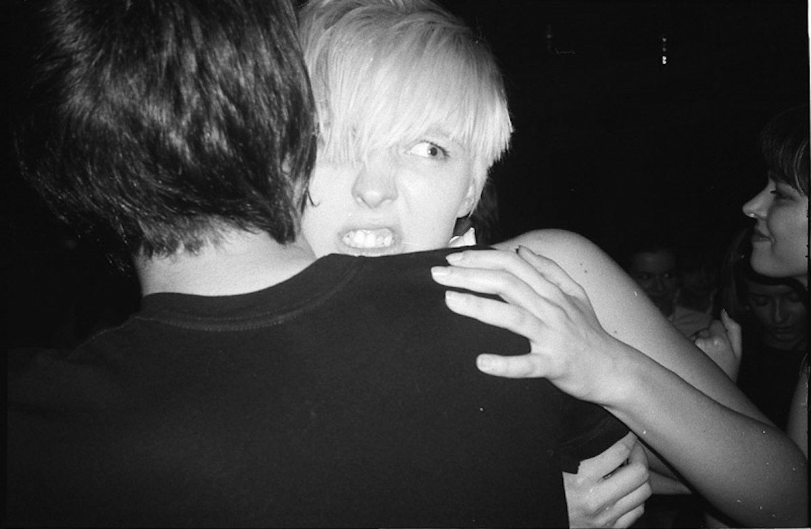

This is where the new Moscow bohemia was born.


Black-and-white film, flash straight in the face.


In 2011 the archive became my solo show “Solyanka. Temple of Former Love” at Winzavod.


The club closed in 2014. The film is still with me.

Temple of Former Love
The cult club of my youth. I worked there from the day it opened and shot its nights on film.
This is where the new Moscow bohemia was born.
Black-and-white film, flash straight in the face.
In 2011 the archive became my solo show “Solyanka. Temple of Former Love” at Winzavod.
The club closed in 2014. The film is still with me.
I shoot nights, clubs and backstage on film, with a direct flash.
Discuss a project →Working worldwide, remotely. Invoicing in USD or EUR.